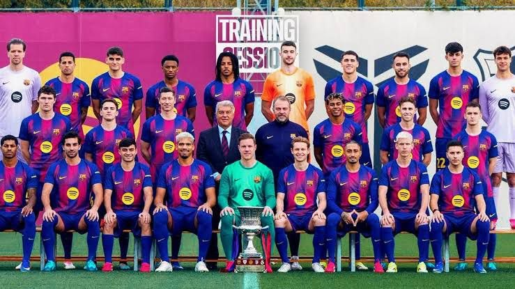

Welcome to Barcelona FC Central
Welcome to Barcelona FC Central, your destination for exploring one of the greatest football clubs in the world.

Discover the club's history, legendary players, achievements and unforgettable moments.
About FC Barcelona
Futbol Club Barcelona was founded in 1899 by Joan Gamper and a group of football enthusiasts. The club is based in Barcelona, Spain.
- Founded: 1899
- Country: Spain
- City: Barcelona
- Nickname: Blaugrana
- Motto: Més que un club
Major Achievements
| Competition | Achievement |
|---|---|
| La Liga | 29 League Titles |
| UEFA Champions League | 5 European Titles |
| Copa del Rey | 32 Domestic Cups |